Many applications in quantum mechanics and quantum chromodynamics require
the computation of the trace of a matrix function:
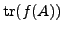,
where common functions include
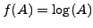 or
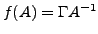,
where 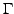 is the identity or a special diagonal matrix, and the
matrix  can be Hermitian or non-Hermitian and almost always very large
and sparse. In this talk, we focus on the Hermitian case of
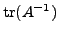.
can be Hermitian or non-Hermitian and almost always very large
and sparse. In this talk, we focus on the Hermitian case of
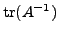.
Currently all computational techniques rely on a Monte Carlo approach and
the fact that the trace can be obtained as the expected value of
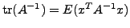.
A sample of  random vectors, 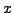, is generated with entries 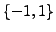
to minimize variance.
Then using each of these vectors as a right hand side, a linear system
is solved with Conjugate Gradient, which can be expensive for ill
conditioned systems.
Moreover, because Monte Carlo converges as
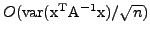,
thousands of linear systems of equations are needed just to get two digits
of accuracy in the trace. Combined, these two problems (ill-conditioning and
slow Monte Carlo convergence) give rise to a challenging computational problem.
random vectors, 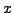, is generated with entries 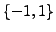
to minimize variance.
Then using each of these vectors as a right hand side, a linear system
is solved with Conjugate Gradient, which can be expensive for ill
conditioned systems.
Moreover, because Monte Carlo converges as
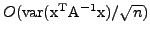,
thousands of linear systems of equations are needed just to get two digits
of accuracy in the trace. Combined, these two problems (ill-conditioning and
slow Monte Carlo convergence) give rise to a challenging computational problem.
Golub et al have shown how to compute the quadratic
form
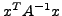 as Gaussian quadrature using the Lanczos method.
Note that if we had the vector
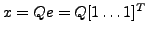,
where
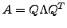 is the eigendecomposition of  ,
we could obtain trivially the
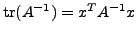.
In lack of such a vector, we have to resort to the expensive Monte Carlo
averaging. However, the theory of Gaussian quadrature suggests considerable
savings may be obtained because the linear system (or the Lanczos iteration)
need not be solved very accurately. A well known result states that the
quadrature error is proportional to
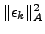, where
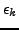
is the error in the solution of the linear system at the
,
we could obtain trivially the
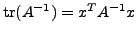.
In lack of such a vector, we have to resort to the expensive Monte Carlo
averaging. However, the theory of Gaussian quadrature suggests considerable
savings may be obtained because the linear system (or the Lanczos iteration)
need not be solved very accurately. A well known result states that the
quadrature error is proportional to
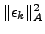, where
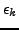
is the error in the solution of the linear system at the  -th CG step.
This implies that, to achieve the same accuracy, quadrature needs only half
of the iterations of the corresponding linear system.
We have tested both a Lanczos based Gaussian quadrature
and the CG method which we stop according to the square of the norm
of the residual. The CG approach is attractive because it can be
applied directly to computing forms such as
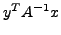 with one CG
iteration. The latter is not a quadratic form and thus convergence is
similar to the linear system residual (not the square of it). However,
two Gaussian quadratures would be required for the same computation.
-th CG step.
This implies that, to achieve the same accuracy, quadrature needs only half
of the iterations of the corresponding linear system.
We have tested both a Lanczos based Gaussian quadrature
and the CG method which we stop according to the square of the norm
of the residual. The CG approach is attractive because it can be
applied directly to computing forms such as
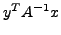 with one CG
iteration. The latter is not a quadratic form and thus convergence is
similar to the linear system residual (not the square of it). However,
two Gaussian quadratures would be required for the same computation.
In this talk, we use deflation based methods to address both computational problems, slow convergence of CG and slow convergence of the Monte Carlo, at the same time.
Deflation based methods such as GMRESDR and eigCG compute eigenvectors of the matrix while they solve linear systems. If subsequent right hand sides are deflated of those computed eigenvectors, their condition number and convergence improves significantly. In the particular case of Hermitian systems, our previously proposed eigCG method computes the eigenvectors close to zero with the same convergence rate as unrestarted Lanczos, while solving for the system with CG. More interestingly, it does so efficiently using only a limited memory window of vectors. The eigenvectors that have not converged by the time CG finishes can be kept in an outer vector basis and incrementally improved by calling eigCG on the next right hand side. This Incremental eigCG method has provided some impressive speedups on real world Lattice QCD applications and is therefore readily applicable to the linear iterations of the trace computation.
Besides fewer CG iterations, deflating eigenvectors improves also the
variance of the Monte Carlo averaging, i.e.,
the coefficient
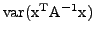. It is easy to prove
that
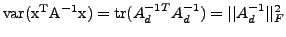,
where 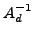 is the matrix 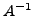 with zeros on the diagonal.
Let  be the eigCG approximations to the eigenvectors of
be the eigCG approximations to the eigenvectors of  closest to 0
and define the projector:
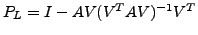. Then the trace
computation can be split into two parts:
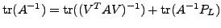.
The first trace is cheap to compute and the second one comes from solving
the system
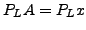 which is deflated and thus more efficiently solved.
More importantly, this is the only nondeterministic part of the computation
and therefore the variance of Monte Carlo is:
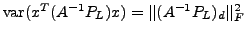.
Because the diagonal is missing from the deflated operator,
we cannot guarantee that
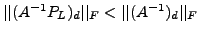
for any choice of eigenvectors. However, if the lowest eigenvectors
eigenvectors are included in
closest to 0
and define the projector:
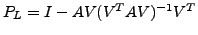. Then the trace
computation can be split into two parts:
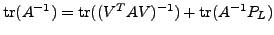.
The first trace is cheap to compute and the second one comes from solving
the system
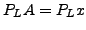 which is deflated and thus more efficiently solved.
More importantly, this is the only nondeterministic part of the computation
and therefore the variance of Monte Carlo is:
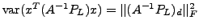.
Because the diagonal is missing from the deflated operator,
we cannot guarantee that
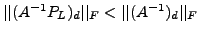
for any choice of eigenvectors. However, if the lowest eigenvectors
eigenvectors are included in  , the variance is reduced.
, the variance is reduced.
We include results from a sample Matlab experiment with a symmetrized, odd-even preconditioned QCD matrix of dimension 248832. We use Incremental eigCG to solve the first 10 random right hand sides and for each one we accumulate 10 additional approximate eigenvectors. After the first 10 right hand sides, we use the 100 approximate eigenvectors to deflate subsequent linear systems. Clearly, not only the number of matrix vector multiplications is drastically reduced but also the variance (as shown by the normalized standard deviation of the averages) is significantly lower. We expect at least a factor of five reduction in the number of total Monte Carlo steps.
| CG | Incremental eigCG | |||||
| #rhs | trace | 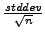 | matvecs | trace | matvecs | |
| 1 | 54954 | n/a | 607 | 54954 | n/a | 675 |
| 2 | 56182 | 1229 | 606 | 54988 | 1964 | 487 |
| 5 | 58031 | 2170 | 603 | 59218 | 2012 | 240 |
| 10 | 60082 | 4173 | 603 | 60133 | 1017 | 178 |
| 100 | 61020 | 1070 | 601 | 61226 | 112 | 98 |
| 500 | 61103 | 459 | 604 | 61310 | 28 | 99 |